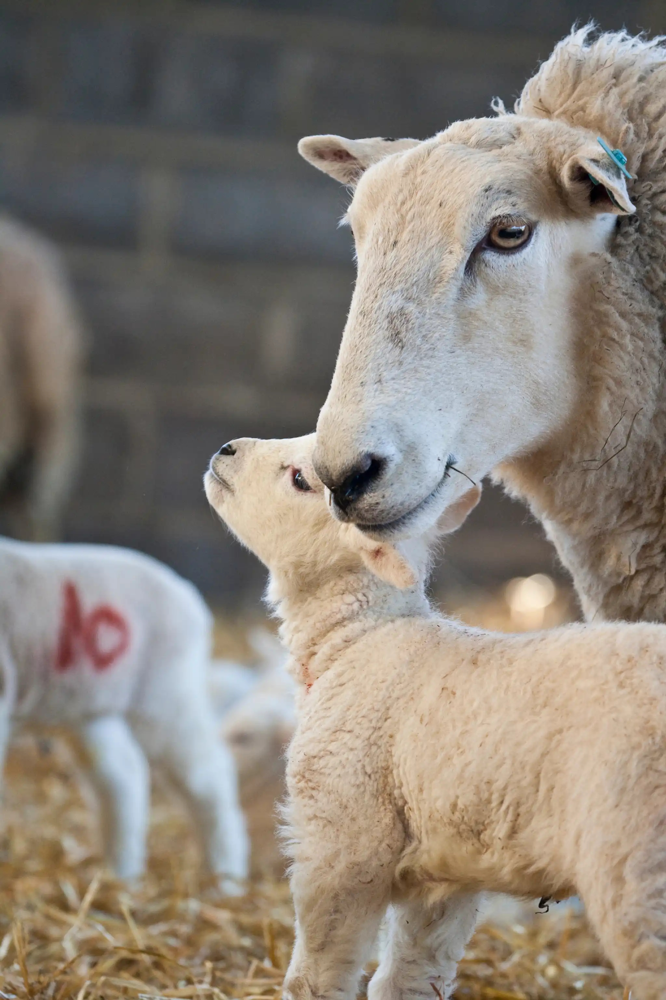
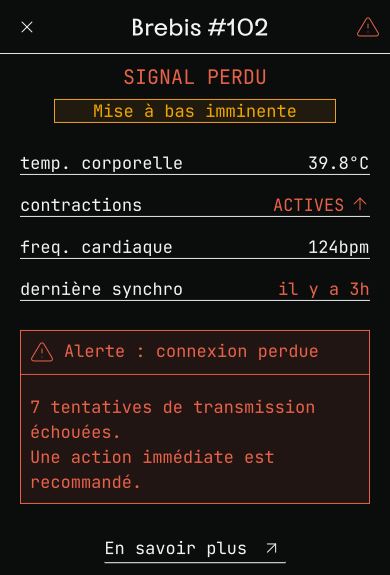
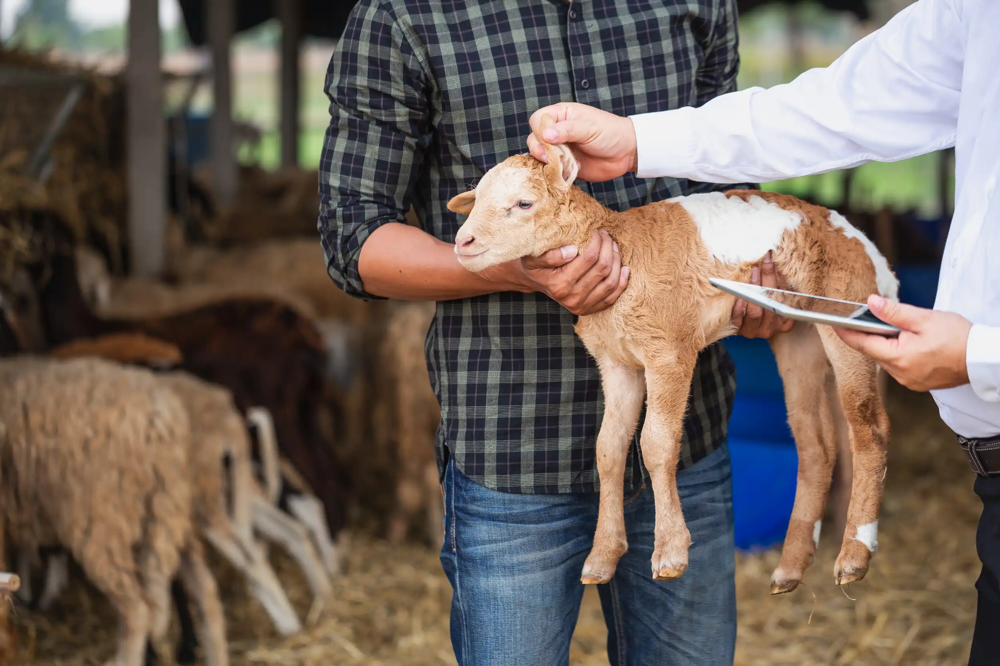

01
L'alerte prête. Le signal, absent.
Un éleveur épuisé s’en va dormir confiant des naissances à FarmSync. L’agneau se présente mal, l’orage coupe le réseau et l’alerte ne part jamais. Ce cas interroge sur la limite de l’automatisation.

"J'avais activé le son. C'est tout ce que j'avais à faire. L'application devait me réveiller si ça commençait. Je me suis endormi en pensant que j'avais fait mon travail et que la technologie faisait le reste. Au matin, aucune notifications. J'ai cru que tout allait bien."
Thomas V. — Eleveur ovin, BastogneQue s’est-il passé?
À 3h12, un orage sec frappe le réseau local. Le routeur redémarre en boucle, incapable de rétablir le pont WiFi avec l'étable. Dans le bâtiment, la brebis #102 entre en phase d’agnelage. L'agneau se présente mal.
L'application FarmSync détecte les contractions via l'implant interne. Elle génère l'alerte et tente de l'envoyer. Le signal meurt au pied de l'antenne. La notification ne partira jamais.
Au réveil, Thomas trouve un écran vide. Le calme n'était qu'une illusion. En se rendant à l'étable, il ne peut que constater les dégâts d'une naissance sans assistance.

En automatisant la vigilance, n’avons-nous pas relégué l’instinct de l’éleveur au second plan?
Notre analyse
Ce cas illustre le paradoxe fondamental de toute automatisation de la vigilance; en déléguant l'attention à la machine, l'éleveur désapprend à surveiller. L'instinct diminue. La sensibilité au troupeau, savoir-faire en lui-même, s'efface au profit d'une interface.
FarmSync promet une précision de 98% sur l'heure de mise à bas. Ce chiffre est réel, nous avons pu le constater. Mais il ne dit rien sur ce que les 2% peuvent engendrer.
Pourtant, rejeter en bloc cet outil serait une erreur. Pour beaucoup d'agriculteurs, cette technologie est une promesse de liberté et de santé préservée. Elle offre enfin la possibilité de s'accorder un sommeil réparateur, de partager un repas en famille et de vivre une vie “normale”. Le véritable défi n'est pas de refuser ce repos mais de trouver l'équilibre pour que la machine reste une aide. Sans jamais étouffer l'expérience humaine.

-
Ce que FarmSync apporte
- Détection des contractions à 98% de précision sur l'heure de naissance
- Confirmation croisée capteur + caméra thermique
- Historique complet des naissances et des anomalies détectées
- Permet à un éleveur malade de se reposer
-
Les problématiques
- Dépendance totale à la connectivité réseau
- Aucun mode prévu pour les alertes critiques
- L'instinct de l'éleveur diminue progressivement
- La responsabilité en cas d'échec reste floue